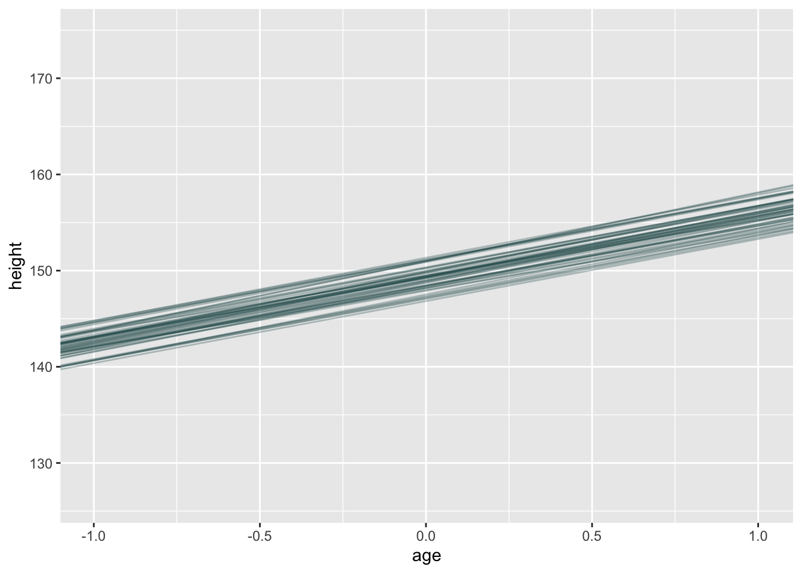
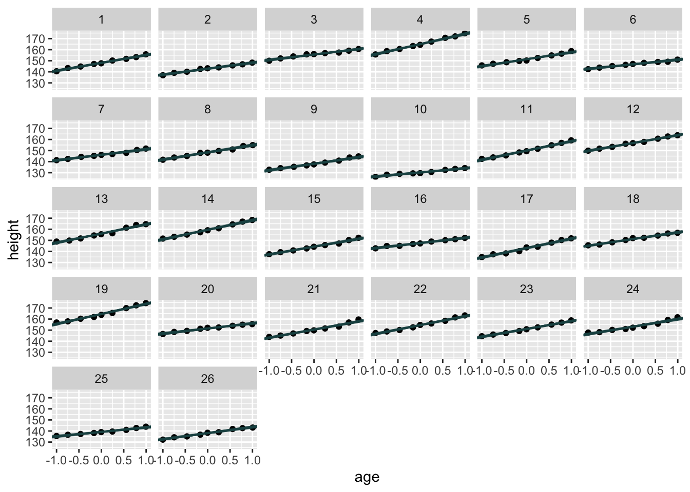
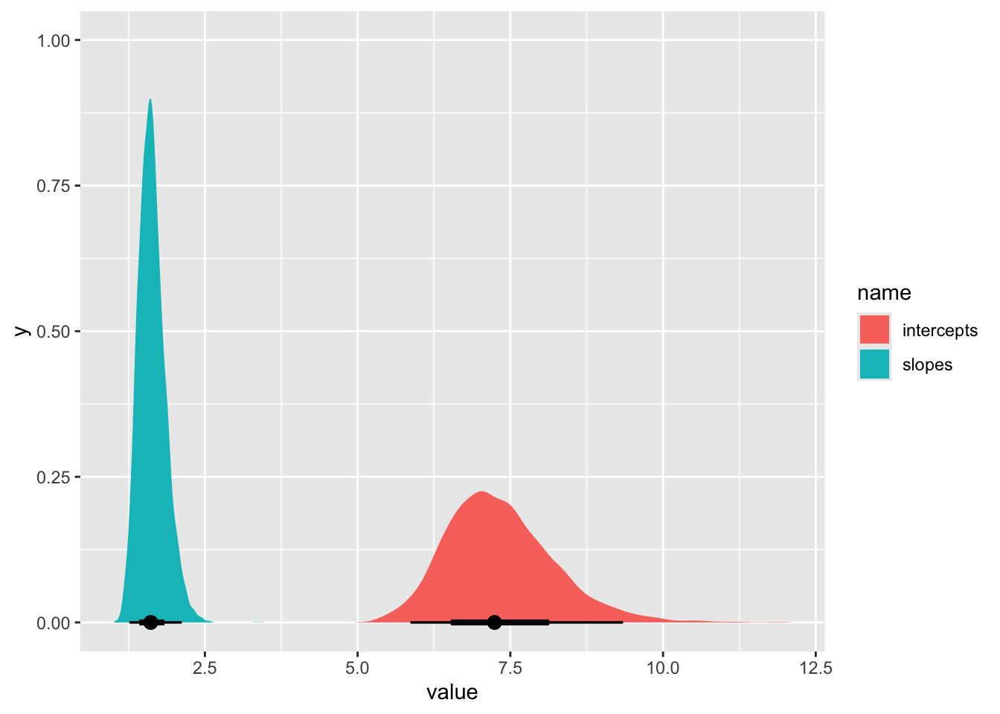
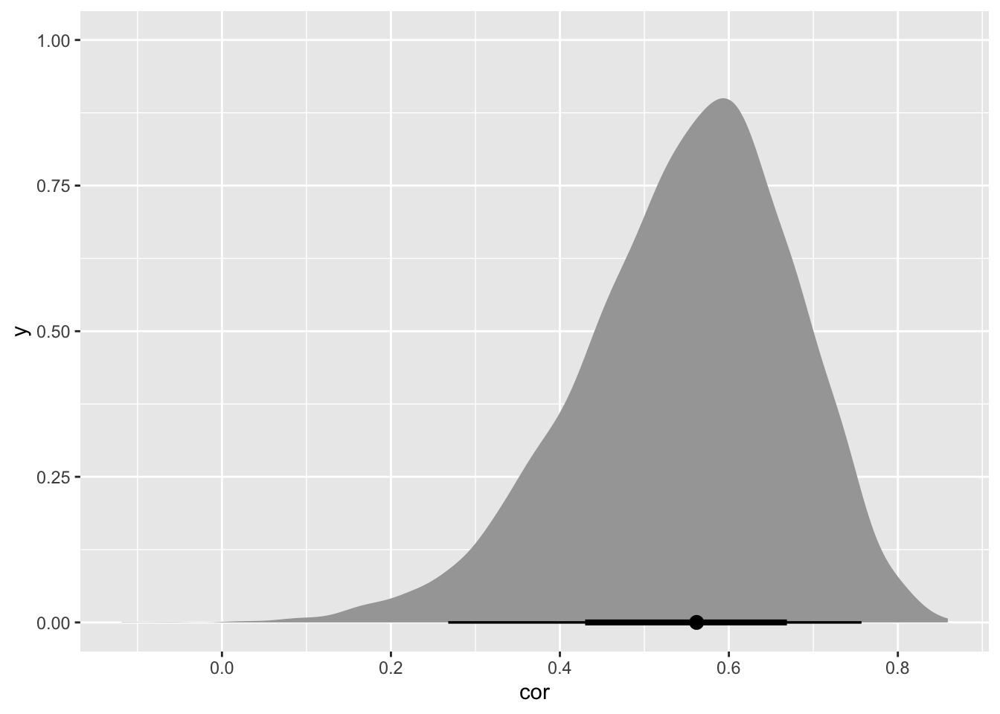
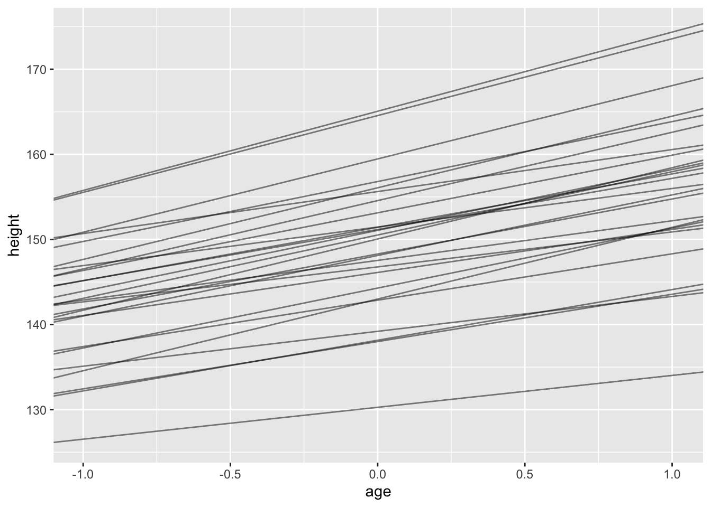

# load packages and data
library(here)
library(tidyverse)
library(brms)
library(tidybayes)
data(Oxboys, package="rethinking")
d <- OxboysProblem set 8
Due by 11:59 PM on Monday, May 26, 2025
Instructions
Please use an RMarkdown file to complete this assignment. Make sure you reserve code chunks for code and write out any interpretations or explainations outside of code chunks. Submit the knitted PDF file containing your code and written answers on Canvas.
Questions
- The data in
data(Oxboys, package="rethinking")is 234 height measurements on 26 boys from an Oxford Boys Club, at 9 different ages (centered and standardized) per boy. Predict height, using age, clustered bySubject(individual boy). Fit a model with varying intercepts and slopes (onage), clustered bySubject.Present and interpret the parameter estimates. Which varying effect contributes more variation to the heights, the intercept or the slope?
Click to see the answer
m1 <- brm(
data=d,
family=gaussian,
height ~ 1 + age + (1 + age | Subject),
prior = c( prior(normal(150, 10), class=Intercept),
prior(normal(0, 10), class=b),
prior(exponential(1), class=sd),
prior(exponential(1), class=sigma) ),
iter=3000, warmup=1000, cores=4, chains=4, seed=1,
file=here("files/models/hw8.1")
)We can see the “fixed” effects (coefficients starting with b_) and “random” effects (start with r_Subject).
posterior_summary(m1) Estimate Est.Error Q2.5 Q97.5
b_Intercept 149.3829883 1.46850148 146.50950785 152.32377191
b_age 6.5238167 0.32423890 5.88539513 7.14244333
sd_Subject__Intercept 7.3381826 0.88677503 5.86477335 9.34626550
sd_Subject__age 1.6327423 0.22062859 1.26325055 2.12180941
cor_Subject__Intercept__age 0.5483297 0.12630069 0.26783258 0.75700547
sigma 0.6635448 0.03527318 0.59906239 0.73894067
Intercept 149.5306524 1.47252070 146.64993985 152.48352330
r_Subject[1,Intercept] -1.2617466 1.48718884 -4.26552101 1.63970173
r_Subject[2,Intercept] -6.5182352 1.48319998 -9.48405685 -3.60302696
r_Subject[3,Intercept] 6.2472186 1.48436020 3.29844789 9.15442718
r_Subject[4,Intercept] 15.6802341 1.48142178 12.69902703 18.56164980
r_Subject[5,Intercept] 2.0464093 1.48403167 -0.93021978 4.96142021
r_Subject[6,Intercept] -2.6039219 1.48479452 -5.59610896 0.28220139
r_Subject[7,Intercept] -3.2588330 1.48588268 -6.25325212 -0.36068697
r_Subject[8,Intercept] -1.0869848 1.48700117 -4.08459991 1.82832350
r_Subject[9,Intercept] -11.2284190 1.48284190 -14.24223378 -8.33298481
r_Subject[10,Intercept] -19.1015568 1.48735344 -22.12492346 -16.21040237
r_Subject[11,Intercept] 0.6739581 1.48699319 -2.32616464 3.57646142
r_Subject[12,Intercept] 7.4218770 1.48528183 4.46184570 10.34484505
r_Subject[13,Intercept] 6.6872686 1.48443683 3.70367334 9.52697857
r_Subject[14,Intercept] 10.0833083 1.47973741 7.10850967 12.95720728
r_Subject[15,Intercept] -5.0964761 1.48850788 -8.08310752 -2.19313945
r_Subject[16,Intercept] -1.8422726 1.48680585 -4.81831131 1.04113237
r_Subject[17,Intercept] -6.3847953 1.48624172 -9.34981972 -3.42573513
r_Subject[18,Intercept] 1.7920867 1.48176798 -1.18064610 4.69774412
r_Subject[19,Intercept] 15.1778942 1.48172108 12.23747900 18.08043459
r_Subject[20,Intercept] 2.0759501 1.48401353 -0.87790038 5.00546462
r_Subject[21,Intercept] 1.1389884 1.48243189 -1.84123234 4.04009518
r_Subject[22,Intercept] 5.1816879 1.48365617 2.16700972 8.10931999
r_Subject[23,Intercept] 1.6854348 1.48717476 -1.29772197 4.59125548
r_Subject[24,Intercept] 3.7517807 1.48595742 0.76773477 6.62077820
r_Subject[25,Intercept] -10.1764655 1.47557082 -13.13166366 -7.30054992
r_Subject[26,Intercept] -11.3816809 1.48378367 -14.37491115 -8.46220936
r_Subject[1,age] 0.6004769 0.45841001 -0.28160230 1.51513155
r_Subject[2,age] -1.0729024 0.45104075 -1.96422504 -0.18986822
r_Subject[3,age] -1.5860124 0.46325350 -2.50016611 -0.68171729
r_Subject[4,age] 2.7801711 0.45143282 1.89373712 3.68170575
r_Subject[5,age] -0.2446343 0.45902074 -1.13083549 0.68052060
r_Subject[6,age] -2.4101264 0.45539798 -3.29896653 -1.51463822
r_Subject[7,age] -1.4673581 0.45421651 -2.31365336 -0.58095268
r_Subject[8,age] -0.0596897 0.45648008 -0.96707090 0.83140730
r_Subject[9,age] -0.5691543 0.45251975 -1.44004029 0.32485443
r_Subject[10,age] -2.7709247 0.46039182 -3.68443435 -1.86593049
r_Subject[11,age] 1.8550682 0.45467286 0.96462203 2.77199347
r_Subject[12,age] 0.5192480 0.45566059 -0.34773359 1.43571159
r_Subject[13,age] 1.8946989 0.46103510 0.99489596 2.80354331
r_Subject[14,age] 2.0919562 0.45980555 1.18688560 2.99569139
r_Subject[15,age] 0.5205145 0.45798559 -0.36164803 1.42260140
r_Subject[16,age] -1.8630466 0.45315080 -2.75386138 -0.96105821
r_Subject[17,age] 1.9031395 0.45782487 1.03357217 2.81198632
r_Subject[18,age] -0.5134095 0.45114819 -1.41675338 0.35943043
r_Subject[19,age] 2.5047687 0.45947638 1.61467770 3.41283448
r_Subject[20,age] -1.9921962 0.45573759 -2.89294125 -1.11107246
r_Subject[21,age] 0.9164173 0.45147359 0.04944571 1.81008839
r_Subject[22,age] 1.5060345 0.45296296 0.59825375 2.38514634
r_Subject[23,age] 0.6300282 0.45261611 -0.27802946 1.52185223
r_Subject[24,age] 0.2552012 0.45948725 -0.62714476 1.15709451
r_Subject[25,age] -2.4198481 0.45653300 -3.31665614 -1.52173358
r_Subject[26,age] -0.9645688 0.45886428 -1.86442214 -0.07104851
lprior -16.9959324 0.96845147 -19.17228574 -15.40117266
lp__ -328.2622142 7.46903798 -344.01474936 -314.53797058At the average age in this study, the average boy is about 149.38 cm tall. For each standard deviation increase in age, boys grow an average of 6.52 cm.
Let’s visualize the average effect.
post = as_draws_df(m1)
d |>
ggplot(aes(x=age, y=height)) +
geom_blank() +
geom_abline( aes(intercept=b_Intercept, slope=b_age),
data=post[1:50,],
color = "#1c5253",
alpha=.3 )
And we can visualize the lines for each of the boys.
post_lines = m1 |>
spread_draws(b_Intercept, b_age, r_Subject[Subject, term]) |>
pivot_wider( names_from=term, values_from=r_Subject ) |>
# calculate intercept and slope for each subject
mutate( intercept=b_Intercept+Intercept,
slope=b_age+age) |>
# select 50 lines for each subject
sample_n(50)
d |>
ggplot( aes(x=age, y=height) ) +
geom_point() +
facet_wrap(~Subject) +
geom_abline( aes(intercept=intercept, slope=slope),
data =post_lines,
color = "#1c5253",
alpha=.3 )
Now the question remains: which contributes more to variation? Variation in intercepts or variation in slopes?
post |> select(intercepts=sd_Subject__Intercept, slopes=sd_Subject__age) |>
pivot_longer(everything()) |>
ggplot( aes(x=value, fill=name)) +
stat_halfeye()Warning: Dropping 'draws_df' class as required metadata was removed.
There is more variation in average height than in change in height.
- Now consider the correlation between the varying intercepts and slopes. Can you explain its value? How would this estimated correlation influence your predictions about a new sample of boys?
Click to see the answer
Let’s examine this correlation.
post |> select(cor = cor_Subject__Intercept__age) |>
ggplot( aes(x=cor) ) +
stat_halfeye()Warning: Dropping 'draws_df' class as required metadata was removed.
There’s a positive and large correlation between height (at average age) and change in height, meaning taller boys get taller faster. This makes sense to me: in order to be taller at the mid-point in the study, you need to grow faster (assuming the boys all start out at roughly the same height. Let’s redo our random effects plot, but with all of the slopes on top of each other.)
post_lines_mean = m1 |>
spread_draws(b_Intercept, b_age, r_Subject[Subject, term]) |>
pivot_wider( names_from=term, values_from=r_Subject ) |>
# calculate intercept and slope for each subject
mutate( intercept=b_Intercept+Intercept,
slope=b_age+age) |>
mean_qi(intercept, slope)
d |>
ggplot(aes(x=age, y=height)) +
geom_blank() +
geom_abline( aes(intercept=intercept, slope=slope, group=Subject),
data=post_lines_mean,
alpha=.5)
There’s less variation at the beginning of the study, and presumably, if we could extend the graph backwards to their toddlerhood, the variation in heights would be much smaller.